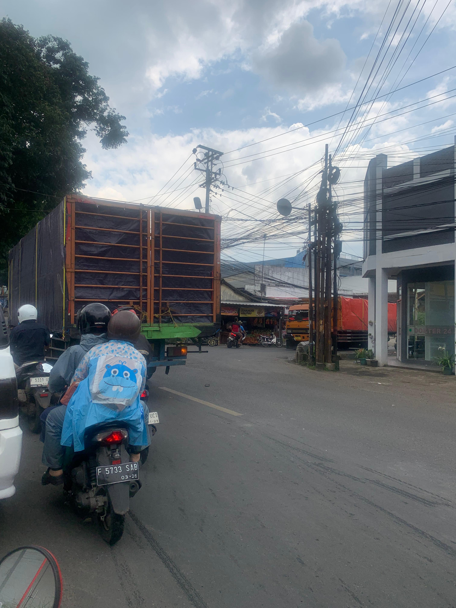

Laporan Kepedulian Lingkungan
Klik pada gambar untuk melihat detail pengamatan polusi
Udara

Pencemaran Udara Kendaraan
Tanah

Pencemaran Tanah Sampah
Air

Klik pada gambar untuk melihat detail pengamatan polusi